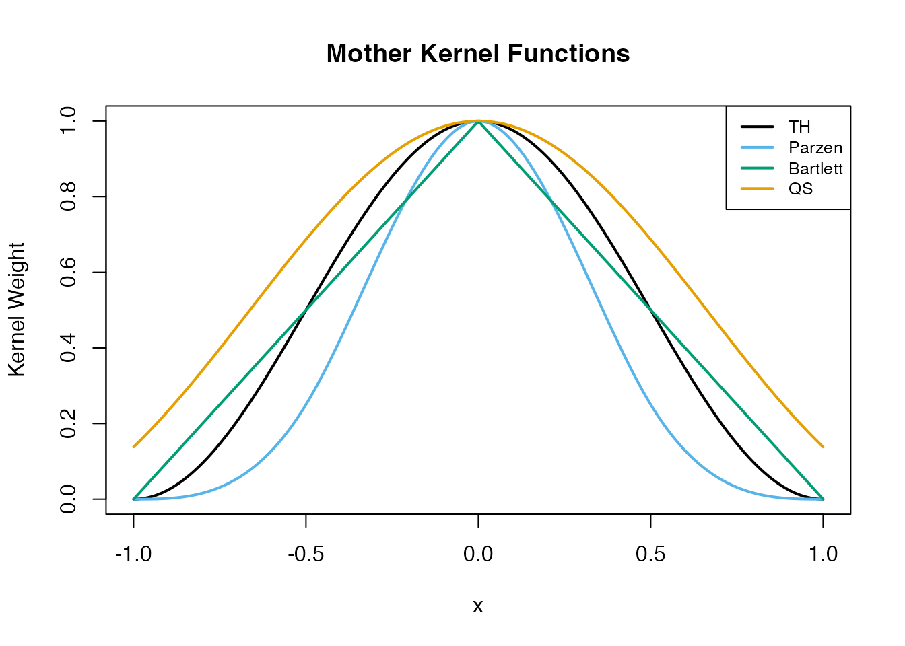
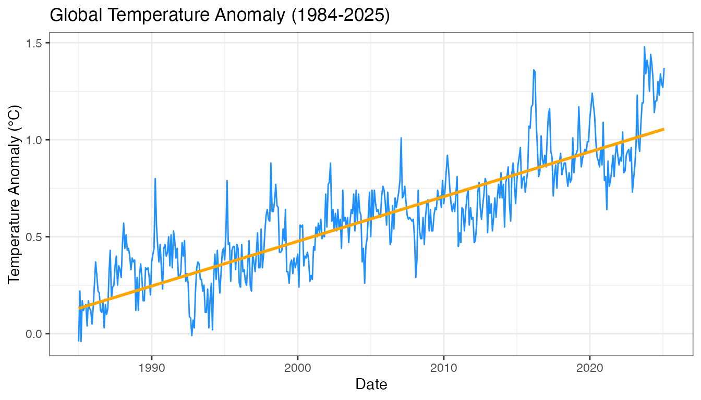
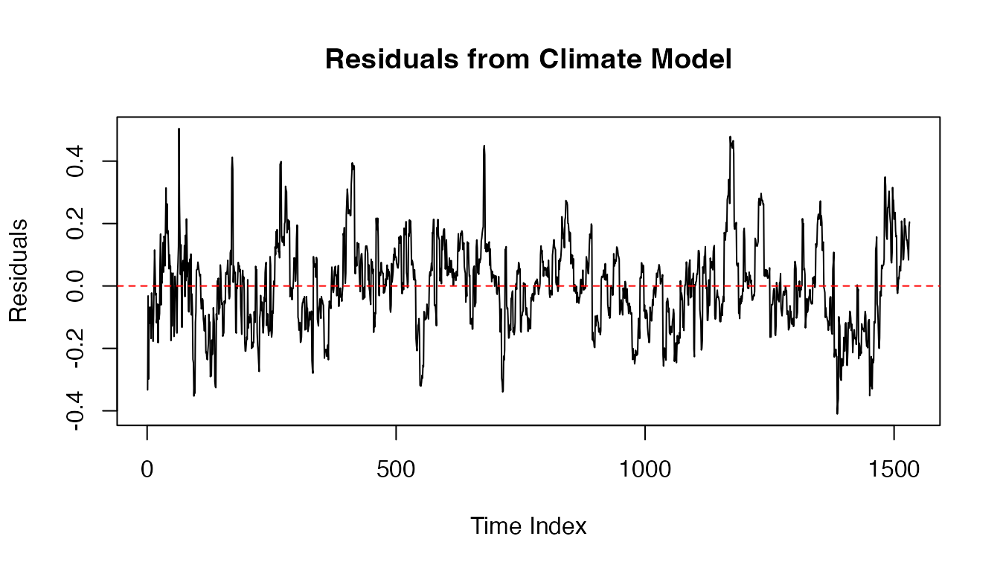
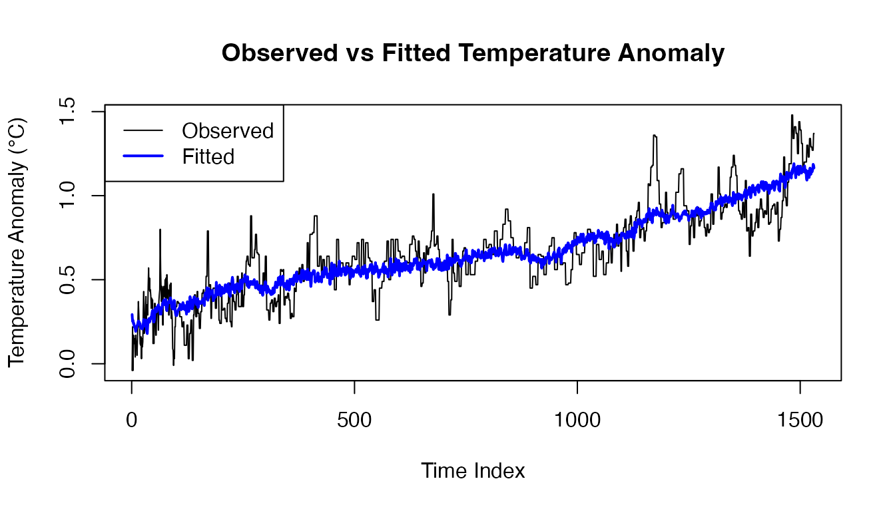

fixedCV-vignette.RmdThe R package fixedCV provides a set of functions and
critical values to conduct a robust inference procedure in the presence
of dependent data sequences. Our emphasis in data sets with sequential
dependent structure that occurs with time series data sets. When
presented with a data set with an unknown sequential structure care must
be taken when conducting an inference procedure, such as hypothesis
testing or constructing confidence intervals. In particular, it is
recommended to use both a robust estimator for calculating the standard
error of the parameters of interest, and to use an alternative limiting
distribution of pivotal quantities and test statistics. The
fixedCV package provides support for both objectives.
The audience of the document is familiar with basic R syntax and functions, and also has some familiarity with linear regression and time series. Furthermore, the goal is to conduct inference procedures when the generating model is unknown but the data set is presumed to be stationary. If either of these parts is not met, then the reader may wish to pursue alternative methods.
Vignette Structure: - For a detailed exploration of the package’s theoretical foundation and methods, read sections on Estimating Standard Error For Model Parameters, Critical Values for Robust Estimation, and The robust_lm function, which demonstrate various options using simulated examples. - For a quick start-to-finish example with real-world data, skip ahead to An Example with Climate Data.
We start by introducing a simulated data sets to help illustrate the
utility of the fixedCV package. Let
,
a white noise process with mean 0 and variance
which is fixed but unknown. Let
,
and
be three fixed but unknown constants. For
we consider the model
A preview of the data set is available below.
# Define the ARMA(1,1) model parameters
set.seed(62)
# Error Term
arma_model <- list(order = c(2, 0, 1), ar = c(0.1, 0.7), ma = 0.4)
e <- arima.sim(model = arma_model, n = 300)
# Regression
ar_model <- list(order = c(1, 0, 0), ar = c(0.15))
X1 <- arima.sim(model = ar_model, n = 300)
X2 <- rnorm(300)
sim_data <- data.frame(Y = (.5 + 1*X1 + 2*X2 + e),
X1 = X1,
X2 = X2)
sim_data <- ts(sim_data)
head(sim_data)
#> Time Series:
#> Start = 1
#> End = 6
#> Frequency = 1
#> Y X1 X2
#> 1 3.312884 0.2575729 -0.09222854
#> 2 3.006731 -0.5339986 0.10935340
#> 3 2.482107 -0.2284757 0.63666973
#> 4 -2.385368 0.8944463 -2.28677694
#> 5 2.915344 1.0828413 0.62311363
#> 6 4.386109 0.6923043 0.81512639
plot(sim_data, main = "")Suppose we wish to estimate our unknown parameters. Let and and . Our estimated parameters using least squares our . Estimating the standard error matrix of is non-trivial when we serial correlation is expected in this setting. Looking at the residual values from our least squares estimates and the trace plots of our data reveals this may be the case.
robust_lm(fit, method ="fitted")
#> $Summary_Table
#> Estimate Std. Error t value P(>|t|)
#> (Intercept) 0.6041772 0.26312544 2.296157 <0.10
#> X1 0.9277646 0.08736372 10.619564 <0.01*
#> X2 1.9772038 0.08991561 21.989549 <0.01*
#>
#> $F_test
#> F Statistic P-Value
#> 1 701.574 <0.01*
#>
#> $CV_table
#> rho b dim .10 .05 .025 .01
#> (Intercept) 0.6915 0.1367 1 1.9161 2.3425 2.7418 3.2411
#> X1 -0.1086 0.0133 1 1.6695 1.9941 2.2868 2.6363
#> X2 0.0062 0.0033 1 1.6510 1.9684 2.2527 2.5908
#> F-test -0.0512 0.0100 2 4.6553 6.0645 7.4711 9.3452
#>
#> $vcov
#> (Intercept) X1 X2
#> (Intercept) 0.0217773133 -0.002990386 0.0004755644
#> X1 -0.0029903856 0.007388029 -0.0013079389
#> X2 0.0004755644 -0.001307939 0.0080696269
robust_lm(fit, method ="simulated")
#> $Summary_Table
#> Estimate Std. Error t value P(>|t|)
#> (Intercept) 0.6041772 0.26312544 2.296157 <0.10
#> X1 0.9277646 0.08736372 10.619564 <0.01*
#> X2 1.9772038 0.08991561 21.989549 <0.01*
#>
#> $F_test
#> F Statistic P-Value
#> 1 701.574 <0.01*
#>
#> $CV_table
#> rho b dim .10 .05 .025 .01
#> (Intercept) 0.6915 0.1367 1 1.9033 2.3225 2.7266 3.2268
#> X1 -0.1086 0.0133 1 1.6539 1.9697 2.2654 2.6131
#> X2 0.0062 0.0033 1 1.6374 1.9541 2.2290 2.5767
#> F-test -0.0512 0.0100 2 4.6687 6.0580 7.4953 9.3785
#>
#> $vcov
#> (Intercept) X1 X2
#> (Intercept) 0.0217773133 -0.002990386 0.0004755644
#> X1 -0.0029903856 0.007388029 -0.0013079389
#> X2 0.0004755644 -0.001307939 0.0080696269Let for , and be the estimated covariance matrix for the process . Then the estimated covariance matrix for is represented via,
In situations where the underlying correlation structure of the process is unknown but stationary a long run variance estimator may be used to estimate the correlation process. Consider in examples and , except we are not confident the model is correctly specified. In this case, a robust hypothesis testing procedure maybe considered.
In these procedures we rely on an estimate for the long run variance (LRV) which we denote . We consider the widely popular spectral variance (SV) estimator for which has two tuning parameters: a kernel function and a bandwidth parameter . Let be the sample auto-covariances. Our SV estimator is defined as,
where is a kernel function.
There are a large selection of choices for the kernel function. A
classical set of kernels, hereby referred to as the mother
kernels, must be piece wise continuous, symmetric about 0, and its
Fourier transformation must be non-negative for all frequencies greater
than 0. For more details on technical aspects, see [1] and more. The
fixedCV package supports four popular kernels that meet
these criteria: Bartlett, Parzen, Tukey-Hanning (TH), Quadratic Spectral
(QS).
the_seq <- seq(-1, 1, length.out = 200)
plot(the_seq, sapply(the_seq, th), type = "l", lwd = 2,
xlim = c(-1, 1), xlab = "x", ylab = "Kernel Weight",
main = "Mother Kernel Functions")
lines(the_seq, sapply(the_seq, parzen), lwd = 2, col = "#56B4E9")
lines(the_seq, sapply(the_seq, bartlett), lwd = 2, col = "#009E73")
lines(the_seq, sapply(the_seq, qs), lwd = 2, col = "#E69F00")
legend("topright",
cex = 0.8,
col = c("black", "#56B4E9", "#009E73", "#E69F00"),
legend = c("TH", "Parzen", "Bartlett", "QS"),
lty = 1, lwd = 2)
In addition to the classical mother kernels, we have a broader class
of kernels called lugsail kernels. These kernels “inflate” the
mother kernels using two additional tuning parameters (r and c), which
can improve finite-sample properties. The fixedCV package
supports three lugsail settings:
The choice of lugsail setting affects both the LRV estimate and the corresponding fixed-b critical values. In practice, the “Mother” setting is a conservative choice, while “Over” may provide better finite-sample coverage in some settings. In particular, it is commonly recommended using the zero lugsail setting for moderately correlated data, and the over lugsail setting for strongly correlated data.
The bandwidth parameter
controls the trade-off between bias and variance in the LRV estimator. A
larger bandwidth includes more autocovariances but increases variance,
while a smaller bandwidth reduces variance but may introduce bias. The
fixedCV package provides automatic bandwidth selection via
the get_b() function, which minimizes Type I error
distortion based on the data’s estimated autocorrelation structure.
Users can also manually specify the bandwidth or control the tolerance
level
to adjust the selection criterion.
fixedCV package
The robust_lm() function automatically handles LRV
estimation when computing robust standard errors. Here’s a simple
example using our simulated data:
# Fit a linear model
fit <- lm(Y ~ X1 + X2, data = sim_data)
# Obtain robust estimates with automatic bandwidth selection
robust_fit <- robust_lm(fit, the_kernel = "Bartlett", lugsail = "Mother")
# View the summary table with robust standard errors
robust_fit$Summary_Table
#> Estimate Std. Error t value P(>|t|)
#> (Intercept) 0.6041772 0.26312544 2.296157 <0.10
#> X1 0.9277646 0.08736372 10.619564 <0.01*
#> X2 1.9772038 0.08991561 21.989549 <0.01*The function computes autocovariances of the moment conditions , selects the bandwidth automatically, and applies the specified kernel to estimate , which is then used to compute robust standard errors for each coefficient.
When conducting a robust inference procedure it has been well documented that while the standard limiting distribution is asymptotically applicable to our test statistics [1,2], the sample size must typically be exceptionally large for the test statistic calculated to be reasonably represented by it. Instead, an alternative limiting distribution introduced by [4] was introduced to combat this problem. This alternative limiting distribution captures the variability of the kernel and bandwidth of the test statistic, as opposed to the limiting distribution which does not account for these aspects.
Unfortunately, the fixed- limiting distribution does not have a closed form expression that can be used to calculate the critical values analytically. Instead, practitioners have been left to approximate these critical values necessary for inference using various approximation methods. The three approximation methods are:
Simulation Approximation: simulated quantiles specific to the kernel, bandwidth, , and . This method is sometimes thought to generate the “true” critical value. However, it is tedious and computationally demanding.
Fitted Approximation: modeled relationships of the simulated quantiles which help extrapolate critical values at bandwidths that may not have been simulated. The model as a function of for each kernel, , and significance level combinations is The coefficients and are fit via OLS using CV tables from the simulated approximation. The intercept is fixed to be . This approximation generates a single expression that can replace an entire column of a simualted CV table.
Analytical Approximation: While there are not exact expressions for the fixed-smoothing quantiles, there are analytical approximations. When the third-order and second-order corrected CV is and when the second-order corrected CV is . See [1] for more details on these formulas, including and .
fixedCV package
The
fixed-
critical values can be obtained via the get_cv() function
using three approximation methods:
# Simulated critical values (lookup table)
get_cv(new_b = 0.05, d = 1, alpha = 0.05, the_kernel = "Bartlett",
lugsail = "Mother", method = "simulated")
#> [1] 4.310057
# Fitted polynomial approximation
get_cv(new_b = 0.05, d = 1, alpha = 0.05, the_kernel = "Bartlett",
lugsail = "Mother", method = "fitted")
#> [1] 4.377325
# Analytical approximation
get_cv(new_b = 0.05, d = 1, alpha = 0.05, the_kernel = "Bartlett",
lugsail = "Mother", method = "analytical")
#> [1] 4.3858The simulated method uses pre-computed lookup tables,
fitted uses polynomial approximations of those tables, and
analytical uses closed-form approximations. The
robust_lm() function calls get_cv() internally
when conducting hypothesis tests.
fixedCV
package
The package includes pre-computed critical values for common kernels (Bartlett, QS), lugsail settings (Mother, Zero, Over), and significance levels (0.01, 0.025, 0.05, 0.10). Advanced users who need critical values for custom kernels or settings can generate them via simulation, though this is typically unnecessary for standard applications.
robust_lm function in the fixedCV
package
The robust_lm() function accepts a method
argument to specify the critical value approximation:
method = "simulated": Uses pre-computed lookup tables
(default, most accurate)method = "fitted": Uses polynomial approximations
(fast, accurate)method = "analytical": Uses closed-form formulas
(fastest, less accurate for small samples)By default, robust_lm() selects bandwidth automatically
using get_b(). Users can override this by specifying the
tau parameter (tolerance level for Type I error distortion)
or by providing a custom bandwidth value directly to the LRV estimator
functions.
Four mother kernels are available via the the_kernel
argument:
"Bartlett": Triangular kernel"Parzen": Parzen kernel"TH": Tukey-Hanning kernel"QS": Quadratic Spectral kernelThe lugsail argument controls the lugsail
transformation: "Mother" (no transformation),
"Zero", or "Over" (inflates the kernel to
improve finite-sample properties).
The Summary_Table component of robust_lm()
output includes robust confidence intervals for each coefficient. These
intervals are constructed using the robust standard errors and the
appropriate
fixed-
critical values, accounting for the serial correlation structure in the
data.
# Obtain robust estimates with confidence levels
robust_fit <- robust_lm(fit, the_kernel = "Bartlett", lugsail = "Mother", conf.level = TRUE)
# Access confidence intervals from robust_lm output
robust_fit$Summary_Table
# Columns include: Estimate, Robust_SE, Lower_CI, Upper_CI, t_statistic, p_valueWhen working with time series data, it’s important to examine
residuals for patterns that might indicate model misspecification or
serial correlation. The robust_lm() function works with
standard lm objects, so you can use the residuals from your
fitted model for diagnostic plots.
# Fit the model
fit <- lm(Y ~ X1 + X2, data = sim_data)
# Time series plot of residuals
plot(fit$residuals, type = "l", ylab = "Residuals", xlab = "Time",
main = "Residual Time Series Plot")
abline(h = 0, col = "red", lty = 2)
# ACF and PACF plots to check for autocorrelation
par(mfrow = c(1, 2))
acf(fit$residuals, main = "ACF of Residuals")
pacf(fit$residuals, main = "PACF of Residuals")
par(mfrow = c(1, 1))
# QQ plot to check normality assumption
qqnorm(fit$residuals)
qqline(fit$residuals, col = "red")
# Residuals vs Fitted values
plot(fit$fitted.values, fit$residuals,
xlab = "Fitted Values", ylab = "Residuals",
main = "Residuals vs Fitted")
abline(h = 0, col = "red", lty = 2)The ACF and PACF plots are particularly useful for identifying the
presence and structure of serial correlation. If significant
autocorrelation is present, the robust inference procedures provided by
fixedCV are essential for valid statistical
conclusions.
lm() and
robust_lm()
It’s important to understand what robust_lm() does and
doesn’t change. The function takes a fitted lm object and
adjusts only the inference, not the model fit itself:
What stays the same: - Coefficient point estimates
()
- Fitted values (fit$fitted.values) - Residuals
(fit$residuals) - Predictions from the model
What changes: - Standard errors (accounting for serial correlation via LRV estimation) - Test statistics (t-statistics, F-statistic) - P-values (using fixed- critical values) - Confidence intervals (wider to reflect dependence structure)
This means for visualization and prediction, you continue to use the
original fit object from lm(). For statistical
inference (hypothesis testing, confidence intervals, significance), you
use the output from robust_lm().
# Example workflow
fit <- lm(Y ~ X1 + X2, data = sim_data)
robust_fit <- robust_lm(fit, the_kernel = "Bartlett", lugsail = "Mother")
# Use fit for plotting and prediction
plot(sim_data[, 1], type = "l", ylab = "Y", main = "Observed vs Fitted")
lines(fitted(fit), col = "blue", lwd = 2)
legend("topleft", legend = c("Observed", "Fitted"),
col = c("black", "blue"), lty = 1, lwd = c(1, 2))
# Use robust_fit for inference
robust_fit$Summary_Table # Robust standard errors, p-values, and CIs
# Coefficients are identical between lm() and robust_lm()
coef(fit)
robust_fit$Summary_Table[, "Estimate"]The key insight is that robust_lm() provides valid
inference when residuals are serially correlated, without requiring you
to re-estimate the model.
We demonstrate robust inference using the climate_data
dataset included in the package. This dataset, obtained from the
hockeystick R package, contains monthly global climate
measurements from December 1984 to January 2025. The variables
include:
date: Observation datecarbon: Atmospheric CO2 concentration (ppm)anomaly: Temperature anomaly relative to 1951-1990
baseline (°C)gmsl: Global mean sea level (mm)methane: Atmospheric methane concentration (ppb)
data("climate_data")
head(climate_data)
#> # A tibble: 6 × 7
#> date year carbon anomaly method gmsl methane
#> <date> <dbl> <dbl> <dbl> <chr> <dbl> <dbl>
#> 1 1984-12-31 1984 345 -0.04 gmsl_tide -6.4 1656.
#> 2 1985-01-31 1985 345. 0.22 gmsl_tide -10.4 1656.
#> 3 1985-02-28 1985 346. -0.04 gmsl_tide -9.5 1652.
#> 4 1985-03-31 1985 348. 0.17 gmsl_tide -11.7 1655.
#> 5 1985-04-30 1985 349. 0.12 gmsl_tide -11.7 1658.
#> 6 1985-05-31 1985 349. 0.14 gmsl_tide -13.5 1656.First, we examine the relationships between variables. Climate time series typically exhibit strong temporal dependencies, making this an ideal application for robust inference methods.
library(GGally)
# Pairwise relationships showing strong linear trends and correlations
custom_lower <- function(data, mapping) {
ggplot(data = data, mapping = mapping) +
geom_line(alpha = 0.8, color = "dodgerblue") +
geom_smooth(method = "lm", color = "orange",
linetype = "solid", linewidth = 0.6)
}
GGally::ggpairs(data = climate_data,
columns = c("date", "carbon", "anomaly", "gmsl", "methane"),
progress = FALSE,
axisLabels = "show",
columnLabels = c("Date", "Carbon", "Anomaly", "GMSL", "Methane"),
lower = list(continuous = custom_lower)) +
ggtitle("Climate Data Pair Plot") +
theme_bw()
# Visualize the primary relationship: temperature anomaly over time
ggplot(data = climate_data, aes(x = date, y = anomaly)) +
geom_line(color = "dodgerblue") +
geom_smooth(method = "lm", color = "orange", se = FALSE) +
xlab("Date") +
ylab("Temperature Anomaly (°C)") +
ggtitle("Global Temperature Anomaly (1984-2025)") +
theme_bw()
#> `geom_smooth()` using formula = 'y ~ x'
We fit a linear model to examine how temperature anomaly relates to the other climate variables:
# Fit the model
fit <- lm(anomaly ~ date + carbon + gmsl + methane, data = climate_data)
# Standard summary (assumes i.i.d. errors)
summary(fit)
#>
#> Call:
#> lm(formula = anomaly ~ date + carbon + gmsl + methane, data = climate_data)
#>
#> Residuals:
#> Min 1Q Median 3Q Max
#> -0.41008 -0.09487 -0.00117 0.08000 0.50458
#>
#> Coefficients:
#> Estimate Std. Error t value Pr(>|t|)
#> (Intercept) -7.736e-01 6.435e-01 -1.202 0.2295
#> date -3.271e-05 7.677e-06 -4.260 2.16e-05 ***
#> carbon 7.497e-04 1.387e-03 0.540 0.5890
#> gmsl 1.004e-02 9.993e-04 10.048 < 2e-16 ***
#> methane 6.348e-04 2.650e-04 2.396 0.0167 *
#> ---
#> Signif. codes: 0 '***' 0.001 '**' 0.01 '*' 0.05 '.' 0.1 ' ' 1
#>
#> Residual standard error: 0.1393 on 1526 degrees of freedom
#> Multiple R-squared: 0.7285, Adjusted R-squared: 0.7278
#> F-statistic: 1024 on 4 and 1526 DF, p-value: < 2.2e-16Climate data typically exhibits strong serial correlation, which violates the i.i.d. assumption underlying standard inference. We can visualize this in the residuals:
# Plot residuals to check for serial correlation
plot(fit$residuals, type = "l", ylab = "Residuals", xlab = "Time Index",
main = "Residuals from Climate Model")
abline(h = 0, col = "red", lty = 2)
The residual plot shows clear patterns, suggesting serial
correlation. To account for this, we use robust_lm() with
the Bartlett kernel:
# Robust inference accounting for serial correlation
robust_fit <- robust_lm(fit, the_kernel = "Bartlett",
lugsail = "Mother", method = "fitted")
# Compare robust vs. standard results
robust_fit$Summary_Table
#> Estimate Std. Error t value P(>|t|)
#> (Intercept) -7.735756e-01 6.456446e+02 -0.0011981447 >=0.10
#> date -3.270943e-05 2.337001e-03 -0.0139963281 >=0.10
#> carbon 7.496914e-04 9.662482e-01 0.0007758787 >=0.10
#> gmsl 1.004093e-02 6.720221e-01 0.0149413759 >=0.10
#> methane 6.348133e-04 1.863825e-01 0.0034059715 >=0.10We can visualize the model fit by comparing observed temperature anomalies with the fitted values:
# Plot observed vs fitted values
plot(climate_data$anomaly, type = "l", ylab = "Temperature Anomaly (°C)",
xlab = "Time Index", main = "Observed vs Fitted Temperature Anomaly")
lines(fitted(fit), col = "blue", lwd = 2)
legend("topleft", legend = c("Observed", "Fitted"),
col = c("black", "blue"), lty = 1, lwd = c(1, 2))
The model captures the overall trend in temperature anomaly well.
However, the robust standard errors are typically larger than the
standard errors from summary(fit), reflecting the
additional uncertainty from serial correlation. The p-values and
confidence intervals are adjusted accordingly using
fixed-
critical values.
The robust_lm() function supports three methods for
obtaining critical values. Here we compare the results using different
methods:
# Simulated method (most accurate, uses lookup tables)
sim_fit <- robust_lm(fit, the_kernel = "Bartlett",
lugsail = "Mother", method = "simulated")
# Fitted method (fast, polynomial approximation)
fitted_fit <- robust_lm(fit, the_kernel = "Bartlett",
lugsail = "Mother", method = "fitted")
# Analytical method (fastest, closed-form approximation)
analytical_fit <- robust_lm(fit, the_kernel = "Bartlett",
lugsail = "Mother", method = "analytical")All three methods produce very similar coefficient estimates and
standard errors. The primary difference lies in the critical values used
for hypothesis testing, which affects p-values and confidence intervals.
For most applications, the fitted method provides an
excellent balance of speed and accuracy. Here’s the summary from the
fitted method:
fitted_fit$Summary_Table
#> Estimate Std. Error t value P(>|t|)
#> (Intercept) -7.735756e-01 6.456446e+02 -0.0011981447 >=0.10
#> date -3.270943e-05 2.337001e-03 -0.0139963281 >=0.10
#> carbon 7.496914e-04 9.662482e-01 0.0007758787 >=0.10
#> gmsl 1.004093e-02 6.720221e-01 0.0149413759 >=0.10
#> methane 6.348133e-04 1.863825e-01 0.0034059715 >=0.10[1] R. Kurtz-Garcia, T. Robacker, M. Griffin (2026). Practical Considerations for Fixed-Smoothing Limiting Distributions. To Appear Soon.
[2] Kiefer, N. M., & Vogelsang, T. J. (2005). A new asymptotic theory for heteroskedasticity-autocorrelation robust tests. Econometric Theory, 21(6), 1130-1164.
[3] Newey, W. K., & West, K. D. (1987). A simple, positive semi-definite, heteroskedasticity and autocorrelation consistent covariance matrix. Econometrica, 55(3), 703-708.
[4] Andrews, D. W. K. (1991). Heteroskedasticity and autocorrelation consistent covariance matrix estimation. Econometrica, 59(3), 817-858.
[5] Sun, Y., Phillips, P. C. B., & Jin, S. (2008). Optimal bandwidth selection in heteroskedasticity-autocorrelation robust testing. Econometrica, 76(1), 175-194.